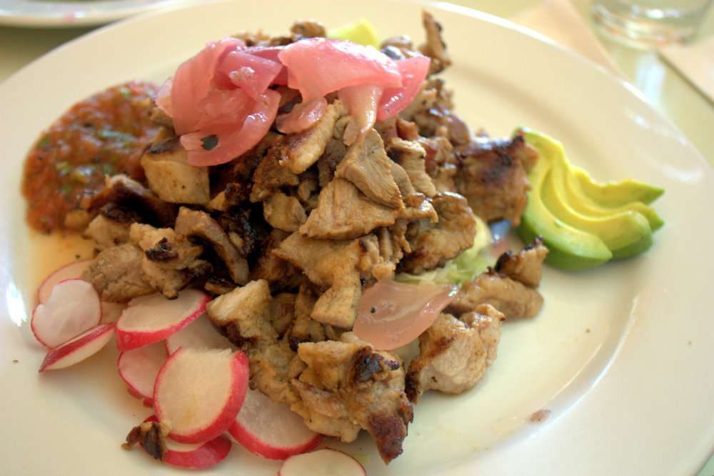

Receta de poc-chuc
Pagina de inicio

El poc-chuc es un platillo típico de la gastronomía de Yucatán, especialmente del poblado de Maní.
Su nombre proviene del maya pok que significa «tostar» o «asar» y de chuc que quiere decir «carbón»;
en conjunto puede traducirse como asar al carbón.
Entre los principales ingredientes de esta delicia están la carne de puerco y el jugo de naranja agria.
De acuerdo con una versión, el origen del poc-chuc data de la segunda mitad del siglo XX (1962);
de hecho, se dice que fue en el restaurante Los Almendros de Mérida cuando se preparó por primera vez.
Ingredientes
- Un kilo de filete de cerdo (cortes delgados)
- gramos de cilantro picado
- 2 cucharadas de orégano
- 4 jitomates enteros
- 2 cebollas partidas por la mitad
- 4 naranjas agrias
- 2 cucharadas de tomillo
- Un manojo de rábano
- 2 cucharadas de pimienta
- Un aguacate
- Sal al gusto
- Tortillas para taquear
Pasos para su preparacion
- Después de desinfectar y lavar tus ingredientes, exprime las naranjas y vacía el jugo en un recipiente. Luego añade el orégano, la pimienta y el tomillo y mezcla bien.
- Posteriormente, baña los filetes con el jugo y añade sal al gusto por los dos lados. Una vez listos, será momento de cocinarlos; para ello puedes emplear un asador o una estufa normal.
- Una vez que esté caliente el asador coloca la carne junto con las cebollas y los jitomates.
- Mueve los filetes constantemente para que se cuezan bien durante 20 o 30 minutos.